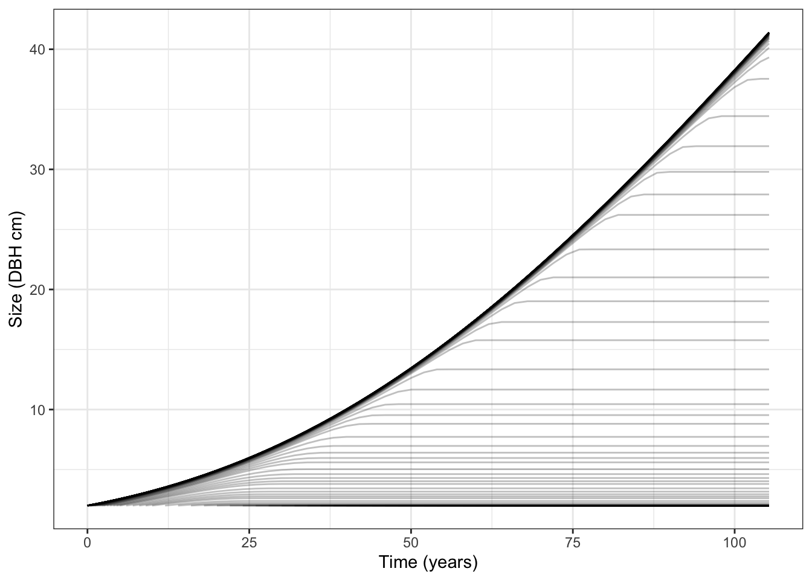
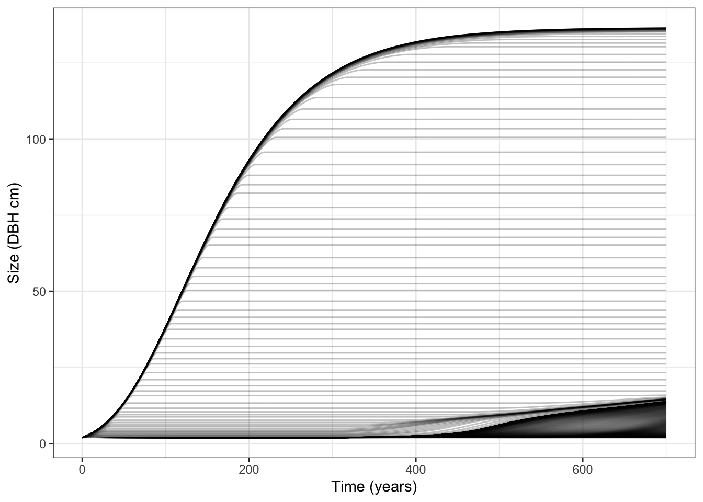
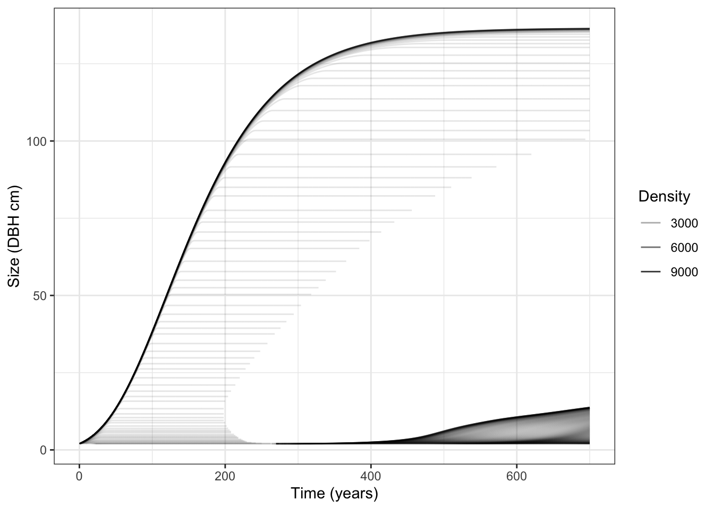
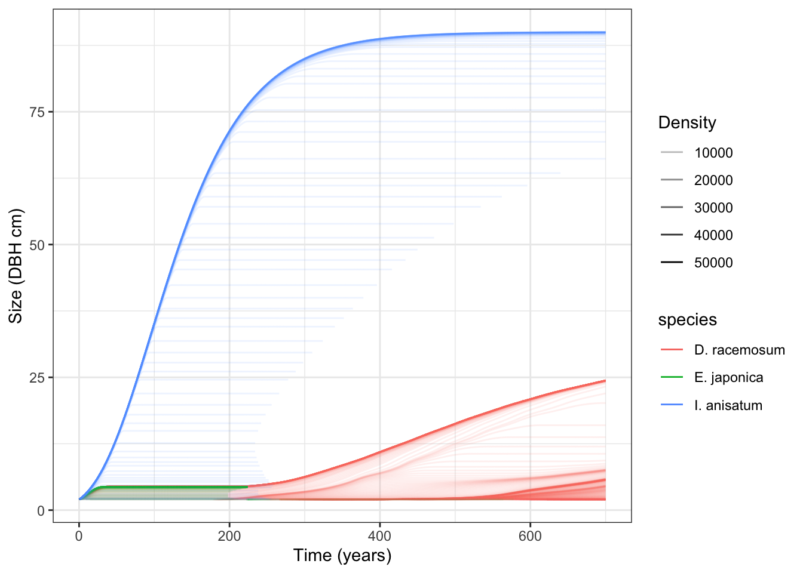

p <- K93_Individual()
# 3 parameters
p$ode_size[1] 3# size, mortality and fecundity
p$ode_names[1] "height" "mortality" "fecundity"# initialised at 2 cm DBH
p$ode_state[1] 2 0 0# set to fixed state
p$ode_state <- c(50, 0, 0)Kohyama 1993 — the forest architecture hypothesis for the stable coexistence of species
model
This page builds on The big picture. Read it first if the notation here is unfamiliar.
K93 is easiest to understand as a size-based demographic model. For each tree, the model asks two main questions:
The second quantity is a measure of competition. A small tree beneath many larger neighbours experiences more competition than a large tree with little basal area above it. K93 uses the tree’s diameter and this competition measure to calculate its growth, mortality, and fecundity.
All species use the same form of these equations, but they need not behave identically. Species can have different coefficient values, and those values change how strongly size and competition affect their vital rates. The three-species example near the end of this page illustrates this distinction.
This is a different starting point from the trait-based FF16 model. FF16 links traits such as leaf mass per area and wood density to a mechanistic carbon budget, then derives vital rates from that budget. K93 instead describes vital rates directly as functions of observed size and competition. In that sense, K93 is a phenomenological model of forest demography rather than a mechanistic model of plant physiology.
The model was introduced in Kohyama (1993). This page does not present the equations as new results; it explains how plant represents and solves them. Within the package, K93 is implemented through the same broad interface as the other physiological models: an individual’s current state and environment are used to calculate its growth, mortality, and fecundity rates.
The equations below share one important environmental quantity: \(B(t,a,x)\), the cumulative basal area of trees larger than a focal tree of size \(x\). A large value of \(B\) means that the focal tree has many, or very large, competitors above it. The competition equation defines this quantity in full.
Eq. 10 of Kohyama (1993):
\[ G(t, a, x) = x \cdot \Bigg(b_0 - b_1 \cdot \ln{x} - b_2 \cdot B(t, a, x)\Bigg) \tag{1}\]
The growth rate \(G\) is proportional to current diameter \(x\). Inside the parentheses, \(b_0\) sets the baseline growth rate, \(b_1\) controls how growth changes with size, and \(b_2\) controls the reduction caused by competition. As the tree becomes larger, the \(b_1\ln{x}\) term reduces its proportional growth rate. More basal area above the tree also reduces growth.
Eq. 12 of Kohyama (1993):
\[ R(t, a, x_0) = d_0 \cdot B_0 \cdot \exp{(-d_1 \cdot B(t, a, x_0))} \tag{2}\]
Fecundity \(R\) increases with the focal tree’s basal area, \(B_0\), and decreases exponentially as competition increases. The coefficient \(d_0\) sets reproductive output per unit basal area, while \(d_1\) determines how strongly competition suppresses that output.
In the plant implementation, \(B_0\) is interpreted as the basal area of one individual. Integrating these individual contributions across the stand gives the same total reproductive output as Eq. 9 of Kohyama (1993).
Eq. 11 of Kohyama (1993):
\[ \mu(t, a, x) = - c_0 + c_1 \cdot B(t, a, x) \tag{3}\]
Competition-dependent mortality \(\mu\) rises linearly with basal area above the focal tree. The implementation does not allow this component to become negative, so values below zero are set to zero. Mortality associated with large-scale disturbance is handled separately by the patch disturbance regime.
Eq. 8 of Kohyama (1993):
\[ B(t, a, x) = \frac{\pi}{4 \cdot s(t, a)} \int_{x}^{x_{max}} y^2 \cdot f(t, a, y) \, dy \tag{4}\]
This integral sums the basal area of trees with diameters between the focal tree’s diameter, \(x\), and the largest diameter in the stand, \(x_{max}\). The function \(f(t,a,y)\) describes the density of trees of size \(y\), while \(s(t,a)\) provides the patch-level scaling used in the original formulation. Because the calculation includes only trees at least as large as the focal tree, small trees generally experience more competition than large ones.
The plant implementation adds a smoothing parameter, \(\eta = 12.0\), so that the competitive effect can be interpolated with a continuous function.
The wider plant framework includes dispersal and establishment effects. They were not part of the original K93 formulation, so both are set to \(1.0\). This choice makes them neutral: neither process changes the number of recruits.
The examples move from one individual to a whole patch. They use the package’s generic state names, so a column or state labelled height should be read as diameter at breast height (DBH) for K93.
First, create a K93 individual and inspect its state variables:
p <- K93_Individual()
# 3 parameters
p$ode_size[1] 3# size, mortality and fecundity
p$ode_names[1] "height" "mortality" "fecundity"# initialised at 2 cm DBH
p$ode_state[1] 2 0 0# set to fixed state
p$ode_state <- c(50, 0, 0)The size characteristic is currently labelled height by the shared package interface, but K93 interprets it as DBH in centimetres.
An individual alone is not enough to calculate rates: the model also needs an environment. Here we create a fixed environment, then ask the individual to calculate the instantaneous rates of change in its state variables:
e <- 0.75
env <- K93_Environment()
env$set_fixed_environment(e, height_max = 300)
p$compute_rates(env)
p$ode_rates[1] 0.013037948 0.004658011 0.404224199In a fixed environment, every individual experiences the same competitive conditions, regardless of its size. The generic plant environment represents resource availability on a proportional scale from zero to one. Values near one represent high availability; values near zero represent strong limitation.
K93 itself describes the environment as cumulative basal area above the focal individual (Equation 4). The package maps that competition measure onto the generic zero-to-one scale. We can reverse the mapping to recover cumulative basal area from the fixed environmental value:
# ind. parameters
s <- p$strategy
# backtransform environment to cumulative basal area
k_I <- K93_Strategy()$pars$k_I
basal_area_above <- function(e) -log(e) / k_I
# growth has both size and competition dependent terms
x <- p$ode_state[1]
x * (s$pars$b_0 - s$pars$b_1 * log(x) -
s$pars$b_2 * basal_area_above(e))[1] 0.01303795The extinction coefficient \(k_I\) controls the mapping between environmental availability and cumulative basal area. Its default value is \(0.01\), and it is stored in the strategy’s biological parameters as K93_Strategy()$pars$k_I.
Fecundity is proportional to an individual’s basal area. The original model expresses reproduction at the level of the whole forest; here, we calculate one individual’s contribution to that total:
# basal area
basal_area <- pi / 4 * x^2
s$pars$d_0 * basal_area * exp(-s$pars$d_1 * basal_area_above(e))[1] 0.4042242As in the original paper, mortality has two parts. Competition-dependent mortality acts on individuals, while competition-independent mortality comes from the patch disturbance regime. The disturbance regime describes how the risk of patch-ending disturbance changes as the patch ages. The following code shows its mean interval. It also reports the death probability implied by the individual’s accumulated competition-dependent mortality state. That probability is still zero here because we calculated instantaneous rates but did not advance the individual through time:
# average disturbance frequency
disturbance <- Weibull_Disturbance_Regime(K93_Parameters()$max_patch_lifetime)
disturbance$mean_interval()[1] 30# current death probability implied by the accumulated hazard
p$mortality_probability[1] 0Next, isolate the competition-dependent mortality rate. With the default extinction coefficient, the rate is small. Reducing \(k_I\) means that the same environmental value corresponds to more basal area above the tree, and hence to stronger competition:
# small, but matches the mortality rate computed above
max(-s$pars$c_0 + s$pars$c_1 * basal_area_above(e), 0)[1] 0.004658011# but increasing intensity of competition increases the rate of mortality
k_I <- 1e-6
-s$pars$c_0 + s$pars$c_1 * basal_area_above(e)[1] 126.5721We can confirm this result by rebuilding the individual with the modified strategy and calculating its rates again:
s$pars$k_I <- 1e-6
p <- K93_Individual(s)
p$ode_state <- c(50, 0, 0)
p$compute_rates(env)
p$ode_rates[2][1] 126.5721To move from an individual to a patch, we add its strategy to a parameter object and run the size-structured community model with run_scm(). Setting collect = TRUE retains the state at each output time. We then reshape the result and plot the DBH trajectory of every cohort:
library(ggplot2)
library(dplyr)
class(s)[1] "K93_Strategy"par <- K93_Parameters()
par$strategies[[1]] <- s
results <- run_scm(par, collect = TRUE)
# `K93_expand_state()` returns a tidy data frame with one row per node per
# output time, so we can plot the height of each cohort directly.
tidy <- K93_expand_state(results)$species
ggplot(tidy, aes(time, height, group = node)) +
geom_line(colour = util_colour_set_opacity("black", 0.25)) +
labs(x = "Time (years)", y = "Size (DBH cm)") +
theme_bw()
The run stops at about 105 years because that is the default max_patch_lifetime for K93. At that point, the simulated patch is still developing. Extending its maximum lifetime to 700 years allows the oldest cohorts to approach their maximum size of 136 cm DBH, as in Fig. 2 of Kohyama (1993):
par$max_patch_lifetime <- 700
results <- run_scm(par, collect = TRUE)
tidy <- K93_expand_state(results)$species
ggplot(tidy, aes(time, height, group = node)) +
geom_line(colour = util_colour_set_opacity("black", 0.25)) +
labs(x = "Time (years)", y = "Size (DBH cm)") +
theme_bw()
The convenience function scm_base_parameters() supplies faster numerical control settings. These settings make it practical to explore the longer run:
fast_par <- scm_base_parameters("K93")
fast_par$strategies[[1]] <- s
fast_par$max_patch_lifetime <- 700
results <- run_scm(fast_par, collect = TRUE)
tidy <- K93_expand_state(results)$species
ggplot(tidy, aes(time, height, group = node)) +
geom_line(colour = util_colour_set_opacity("black", 0.25)) +
labs(x = "Time (years)", y = "Size (DBH cm)") +
theme_bw()
The previous lines give every cohort the same visual weight, even when few individuals remain in it. Mapping line transparency to cohort density makes the changing abundance of trees visible and helps reveal the formation of canopy gaps:
tidy %>%
filter(density > 1e-7) %>%
ggplot(aes(time, height, group = node, alpha = density)) +
geom_line() +
labs(x = "Time (years)",
y = "Size (DBH cm)",
alpha = "Density") +
theme_bw()
Finally, reproduce the three-species setup described by Kohyama. Each row of the trait matrix supplies a different set of vital-rate coefficients. The species therefore share the K93 equation structure but differ in their growth, mortality, and fecundity responses:
sp <- trait_matrix(c(0.042, 0.063, 0.052,
8.5e-3, 0.014, 0.015,
2.2e-4, 4.6e-4, 3e-4,
0.008, 0.008, 0.008,
1.8e-4, 4.4e-4, 5.1e-4,
1.4e-4, 2.5e-3, 8.8e-3,
0.044, 0.044, 0.044),
c("b_0", "b_1", "b_2",
"c_0", "c_1", "d_0", "d_1"))
fast_par2 <- scm_base_parameters("K93")
fast_par2$max_patch_lifetime <- 700
fast_par2$strategy_default$pars$k_I <- 1e-6
sp_par <- add_strategies(fast_par2, sp, birth_rate = rep(1, 3))
sp_results <- run_scm(sp_par, collect = TRUE)
sp_names <- c("D. racemosum", "I. anisatum", "E. japonica")
sp_tidy <- K93_expand_state(sp_results)$species %>%
mutate(species = sp_names[as.integer(species)]) %>%
filter(density > 1e-7)
ggplot(sp_tidy, aes(time, height, colour = species,
group = paste(species, node), alpha = density)) +
geom_line() +
labs(x = "Time (years)",
y = "Size (DBH cm)",
alpha = "Density") +
theme_bw()
K93 reduces a complex forest to a clear demographic picture: trees change in diameter, and larger trees suppress smaller ones through cumulative basal area. Species differ through the coefficients in their vital-rate equations, not through an explicit carbon budget or a set of physiological traits. The plant package then embeds those individual rules in its shared framework for cohorts, patches, recruitment, and disturbance.